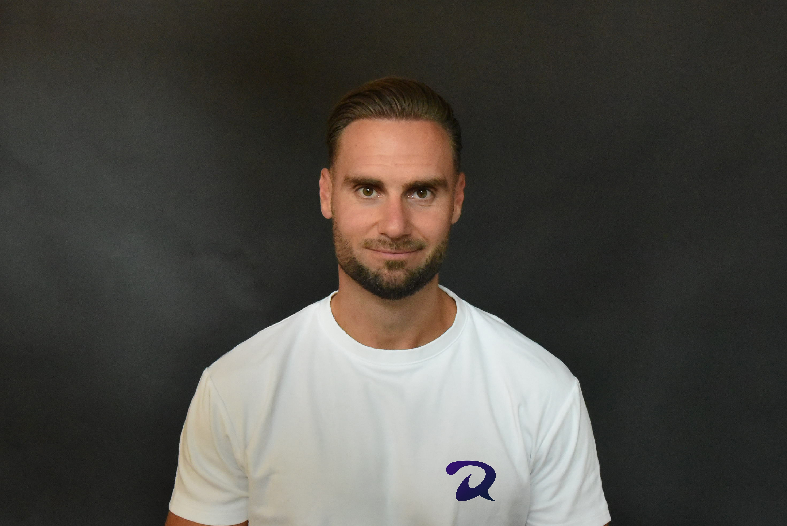

Roel Duquesnoy
Online coach
Vader
Sportdocent
Als volwassene begonnen deze ongezonde eetgewoonten zijn tol te eisen. Het ene jaar was ik 20 kilo zwaarder dan het jaar ervoor. Deze fluctuaties in mijn gewicht maakten duidelijk dat mijn voedingspatroon niet in balans was. Mijn aanpak varieerde van strikt en sociaal isolement tot alles eten wat los en vast zat.